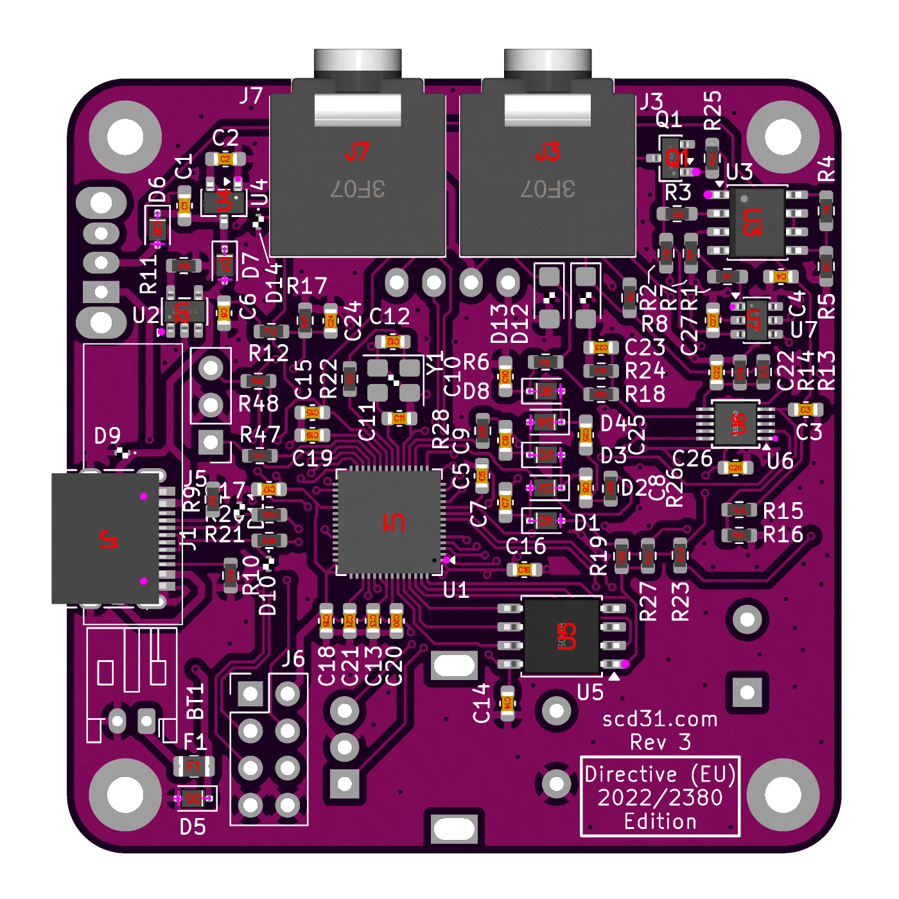

imzoe.me blog projects shop
DIY Electrolysis - Parts & Ordering
This was designed to be ordered via JLCPCB and assembled with their PCBA service. You can hand solder this, but it will be more time-consuming. Unless you know what you're doing, I strongly recommend sticking to JLCPCB's PCBA service.
Uploading the PCB
Go to the Github repo and go to the releases section to download the latest version. Download all the files except the source code.
Go to JLCPCB and sign up for an account. Then once you're done, click on the "Order Now" button. Upload the hair-electrolysis-machine.zip file. It may take a few moments.
Check "Confirm Production file" to have one of their engineers check over the order before it goes to manufacture. Leave the settings on their defaults, unless you know what you're doing.
One thing you can change risk free is the PCB colour! Choose whatever you like, it's free to change but may take a few days extra to arrive.
At the bottom of the page, check the toggle switch for PCB Assembly.
Check the "PCB Build Time" option to make sure it is what you want. You can pay more to get it faster, but I don't. Ignore the shipping quote for now.
Check the "Confirm Parts Placement" option to have one of their engineers review the part placement before manufacturing.
Check your PCB assembly options - 'PCBA Qty' should be however many you want assembled. If you order 5 boards (min. quantity is 5) and only assemble 2, you'll get 3 bare boards and 2 assembled ones.
Other options can be left on their defaults.
The BOM
You should be presented with the bare board on screen. The tab at the top should say "PCB". Click Next.
You will be put into the Bill of Materials (BOM) tab. Click "Add BOM File" and upload bom.csv (which you previously downloaded from the releases section on Github). Then, click "Add CPL File" and upload positions.csv.
JLCPCB will present you with a table of parts. The majority, if not all, should be autofilled.
Check over each one and make sure they have enough stock of each. Some things they might not have enough of - this can be annoying, but you will have to find an alternative part. In most cases, you can just search the parts library for a like-for-like replacement.
If you do this, pay attention to the part footprint and the other specs of the part to make sure it will work. A lot of parts have clone variants with extremely similar names that will work as alternatives.
Once you and the site are happy with the BOM, click Next at the bottom of the page.
Component Placement
For whatever reason, some parts may sometimes not be oriented correctly and you need to fix that yourself if that is the case.
The usual suspects are the two 3.5mm jacks, the type C port, and U1 (RP2040). Below is how it should look if nothing is awry:

Select a part that isn't aligned correctly and use the arrow keys in the top right to align it. View it from the top and bottom to make sure everything is in the right hole.
All other ICs on the board with a circle on them need to be aligned with the purple circles/white triangles on the PCB, but they typically are by default.
Once you've verified all is aligned, click Next.
Ordering
You will be presented with a summary of your order. Check over it and make sure everything is correct. If you are happy, click "Add to Cart".
Select both the PCB and Assembly checkboxes and then click "Secure Checkout".
Here you can review the shipping method. I go with the cheapest, but that will obviously take longer.